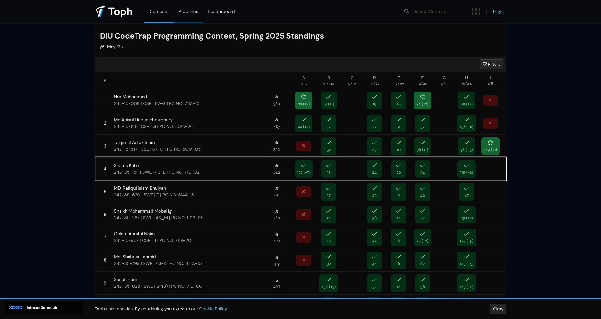

I'm thrilled to share that I placed 4th in the DIU CodeTrap Programming Contest, Spring 2025. It was an intense and rewarding battle of brains, and I'm incredibly proud to represent the Software Engineering community with this result.
The result
- 4th place overall.
- A total of 6 problems solved.
- Strong performance across various problem sets.
- A great experience of speed, logic, and resilience under pressure.
The final standings
The contest had nine problems, labelled A to I. I solved six of them: A, B, D, E, F, and H. The top four places all finished with 6 solved; their total penalty times on the standings were 360, 487, 530, and my 642 minutes, in that order (lower is better). The 5th place finisher solved 5.

How to read my entries on the scoreboard: the first number is the minute of the contest when my accepted solution was submitted, and a number in brackets, like (+7), is how many rejected attempts I made on that problem before it was accepted. Each rejected attempt adds 20 penalty minutes, and only on problems that end up solved. Ranking is by problems solved first, then by the lowest total penalty. The last figure for each problem comes from the problem list on Toph, which shows accepted submissions out of all submissions from every contestant:
- A, The Maze of Twisting Scrolls: accepted at minute 172 after 7 rejected attempts. Only 3 of 37 submissions were accepted.
- B, Tic-Toc, Tic-Toc: Run For Your Life: accepted at minute 11 on the first try. 91 of 130 submissions were accepted.
- D, Jaundice: accepted at minute 24 on the first try. 39 of 67 submissions were accepted.
- E, Because Brains Run on Biryani!: accepted at minute 26 on the first try. 158 of 165 submissions were accepted.
- F, Countdown to Freedom: accepted at minute 34 on the first try. 14 of 49 submissions were accepted.
- H, Circle of Secrets: accepted at minute 115 after 6 rejected attempts. 10 of 44 submissions were accepted.
Adding it up: the six accepted times total 382 minutes, and the 13 rejected attempts (7 on A, 6 on H) add 260 more, which gives the 642 on the standings. C, G, and I have no accepted entry from me. No submission was accepted for C, Duplify Tree (0 of 10), or G, Clash of Permutations (0 of 5), and only 1 of 8 submissions was accepted for I, Flags Outage.
Thank you
A big shout-out to all the participants who pushed the bar high, especially those who made it to the leaderboard. And hats off to the organizers at Toph, Daffodil International University (DIU), and the DIU Software Engineering Club for hosting such an engaging and well-run contest.
Onward and upward: more problems to solve, more milestones to hit.